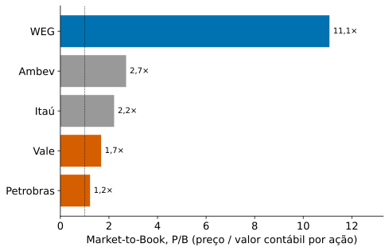
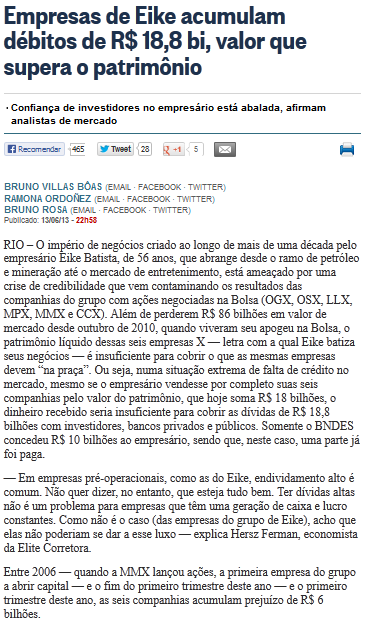
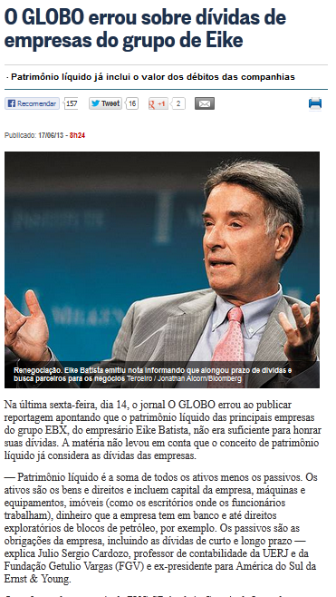
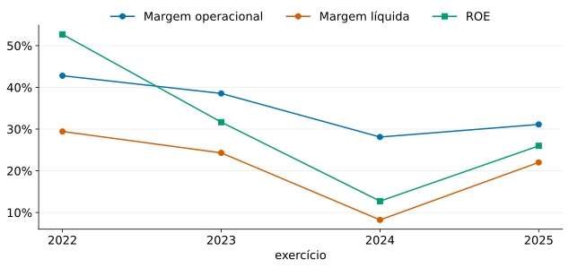
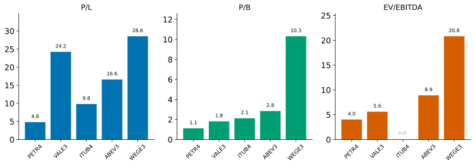

| Ativos | 2025 (R$ bi) |
|---|---|
| Ativo circulante | 139,4 |
| ↳ caixa e aplicações | 50,4 |
| ↳ recebíveis | 36,5 |
| ↳ estoques | 45,0 |
| Ativo não circulante | 1.078,8 |
| ↳ imobilizado (Net PPE) | 920,7 |
| ↳ intangíveis | 13,8 |
| Total do ativo | 1.218,2 |
De maneira simplificada:
Outros: no Brasil, estrutura determinada pela Lei n° 11.638/07.
(Balance Sheet ou Statement of Financial Position)
Identidade Patrimonial:
\[A \equiv P + PL\]
Contas selecionadas: as subcontas não esgotam cada grupo.
| Ativos | 2025 (R$ bi) |
|---|---|
| Ativo circulante | 139,4 |
| ↳ caixa e aplicações | 50,4 |
| ↳ recebíveis | 36,5 |
| ↳ estoques | 45,0 |
| Ativo não circulante | 1.078,8 |
| ↳ imobilizado (Net PPE) | 920,7 |
| ↳ intangíveis | 13,8 |
| Total do ativo | 1.218,2 |
Fonte: Yahoo Finance — balanço da PETR4.SA, via yfinance, exercício 2025. Demonstrações oficiais: Petrobras RI.
Contas selecionadas: as subcontas não esgotam cada grupo.
| Passivos e patrimônio líquido | 2025 (R$ bi) |
|---|---|
| Passivo circulante | 197,5 |
| ↳ contas a pagar e obrigações acumuladas | 80,2 |
| ↳ dívida e arrendamentos | 67,0 |
| Passivo não circulante | 604,9 |
| ↳ dívida e arrendamentos | 315,4 |
| ↳ provisões | 157,9 |
| Total do passivo | 802,4 |
| Patrimônio líquido total | 415,8 |
| Total do passivo + PL | 1.218,2 |
A identidade A ≡ P + PL confere: 1.218,2 ≈ 802,4 + 415,8 (R$ bi).
Fonte: Yahoo Finance — balanço da PETR4.SA, via yfinance, exercício 2025. Demonstrações oficiais: Petrobras RI.

Fonte: Yahoo Finance via yfinance (PETR4.SA), exercício 2025.
Global Conglomerate Corporation, exercício terminado em 31/12 (valores em $ milhões).
| Conta | 2005 | 2004 |
|---|---|---|
| Ativo circulante | ||
| Caixa | 21,2 | 19,5 |
| Contas a receber | 18,5 | 13,2 |
| Estoques | 15,3 | 14,3 |
| Outros circulantes | 2,0 | 1,0 |
| Total ativo circulante | 57,0 | 48,0 |
| Ativos realizáveis no longo prazo | ||
| Terras | 22,2 | 20,7 |
| Edifícios | 36,5 | 30,5 |
| Equipamentos | 39,7 | 33,2 |
| (menos) Depreciação acumulada | (18,7) | (17,5) |
| Propriedades, instalações e equipamentos líquidos | 79,7 | 66,9 |
| Fundo de comércio | 20,0 | — |
| Outros realizáveis no longo prazo | 21,0 | 14,0 |
| Total dos ativos realizáveis no longo prazo | 120,7 | 80,9 |
| Total do ativo | 177,7 | 128,9 |
Fonte: Berk & DeMarzo (2024), Tabela 2.1.
Global Conglomerate Corporation, exercício terminado em 31/12 (valores em $ milhões).
| Conta | 2005 | 2004 |
|---|---|---|
| Exigíveis no curto prazo | ||
| Contas a pagar | 29,2 | 24,5 |
| Títulos a pagar / dívidas de curto prazo | 3,5 | 3,2 |
| Vencimentos no curto prazo de dívidas de longo prazo | 13,3 | 12,3 |
| Outros exigíveis no curto prazo | 2,0 | 4,0 |
| Total passivo circulante | 48,0 | 44,0 |
| Exigíveis no longo prazo | ||
| Dívidas de longo prazo | 99,9 | 56,3 |
| Obrigações de leasing financeiro | — | — |
| Total de dívidas | 99,9 | 56,3 |
| Impostos diferidos | 7,6 | 7,4 |
| Outros exigíveis no longo prazo | — | — |
| Total de exigíveis no longo prazo | 107,5 | 63,7 |
| Total do passivo | 155,5 | 107,7 |
| Patrimônio dos sócios | 22,2 | 21,2 |
| Total do passivo e patrimônio dos sócios | 177,7 | 128,9 |
Fonte: Berk & DeMarzo (2024), Tabela 2.1.


Fonte: O Globo, 13/06/2013 (reportagem original) e 17/06/2013 (correção do próprio jornal) — confusão entre patrimônio líquido e o total de dívidas do grupo Eike Batista.
Use o valor contábil do patrimônio dos sócios da Global em 2005:
| Dado | Valor |
|---|---|
| Patrimônio dos sócios | $22,2 milhões |
| Ações em circulação | 3,6 milhões |
| Preço por ação | $10,00 |
Qual a capitalização de mercado? Como ela se compara ao valor contábil (book value) do patrimônio dos acionistas?
Dados reais atuais (yfinance, priceToBook), mesmos 5 tickers do slide “Múltiplos nos dados” adiante. Petrobras e Vale (negócios de commodity) mais próximas do valor contábil; WEG com o maior prêmio. Verificação de proveniência (câmbio, VALE3.SA vs. ADR): dados/2-analise-demonstrativos/SNAPSHOT_INFO.txt.
\[EV \equiv \text{Val. merc. das ações} + \underbrace{\text{dívida} - \text{caixa}}_{\text{dívida líquida}}\]
| Conta | 2025 (R$ bi) | |
|---|---|---|
| 0 | Receita líquida | 488,7 |
| 1 | Custo dos produtos vendidos | (256,1) |
| 2 | Lucro bruto | 232,6 |
| 3 | Despesas operacionais | (80,5) |
| 4 | Resultado operacional | 152,1 |
| 5 | Resultado financeiro líquido | (21,6) |
| 6 | Lucro antes dos impostos | 146,8 |
| 7 | Impostos | (38,8) |
| 8 | Lucro líquido | 107,6 |
Margem bruta 47.6%; margem líquida 22.0%.
Fonte: Yahoo Finance via yfinance (PETR4.SA), exercício 2025.
(Income Statement ou Statement of Financial Performance)
Global Conglomerate Corporation, exercício terminado em 31/12 (valores em $ milhões).
| Conta | 2005 | 2004 |
|---|---|---|
| Total de vendas | 186,7 | 176,1 |
| Custo das vendas | (153,4) | (147,3) |
| Lucro bruto | 33,3 | 28,8 |
| Despesas de vendas, gerais e administrativas | (13,5) | (13,0) |
| Pesquisa e desenvolvimento | (8,2) | (7,6) |
| Depreciação e amortização | (1,2) | (1,1) |
| Resultado operacional | 10,4 | 7,1 |
| Outras receitas | — | — |
| Lucro antes de juros e impostos (EBIT) | 10,4 | 7,1 |
| Resultado de juros (despesa) | (7,7) | (4,6) |
| Resultado antes dos impostos | 2,7 | 2,5 |
| Impostos | (0,7) | (0,6) |
| Lucro líquido | 2,0 | 1,9 |
| Lucros por ação | $0,556 | $0,528 |
| Lucros diluídos por ação | $0,526 | $0,500 |
Fonte: Berk & DeMarzo (2024), Tabela 2.2.
EBIT — earnings before interest and taxes: exclui despesas com juros do resultado antes de impostos
EBITDA — earnings before interest, taxes, depreciation, amortization: adiciona depreciação e amortização de volta (não são despesas de caixa)
Lucro por ação, EPS (earnings per share):
\[\text{EPS} = \frac{\text{Lucro Líquido}}{\#\text{ações em circulação}}\]
Medidas de eficiência / margem:
Margem operacional: \(\dfrac{\text{Res. Operacional}}{\text{Total de Vendas}}\)
Margem líquida: \(\dfrac{\text{Lucro Líquido}}{\text{Total de Vendas}}\)
Eficiência de ativos:
Capital de giro:
Prazo de recebimento (dias): \(\dfrac{\text{Contas a receber}}{\text{Vendas}/\text{dias}}\)
Turnover de estoques: \(\dfrac{\text{Custo bens vendidos}}{\text{Estoque}}\)
Índices de cobertura de juros:

Índice de um ano só pode enganar; a série temporal revela ciclo e tendência.
Fonte: Yahoo Finance via yfinance (PETR4.SA), exercícios 2021–2025.
escala fixa: 0–55%
Artefato interativo próprio, offline. Fonte: snapshots locais do Yahoo Finance via yfinance (PETR4.SA); 2021 consta sem observações nos CSVs, por isso o recorte utilizável é 2022–2025.
Retornos contábeis (diferente do retorno da ação):
Return on Equity (ROE): \(\dfrac{\text{Lucro Líquido}}{\text{P.L. Contábil}}\)
Return on Assets (ROA): \(\dfrac{\text{Lucro Líquido} + \text{Despesa com juros}}{\text{Ativos}}\)
Return on Invested Capital (ROIC): \(\dfrac{EBIT\,(1-\tau)}{P.L.\,\text{Contábil} + \text{Dívida Líquida}}\)
Índices de avaliação:
| Índice | Fórmula | PETR4 2025 | |
|---|---|---|---|
| 0 | Liquidez corrente | At.Circ / Pas.Circ | 0.71 |
| 1 | Liquidez seca | (At.Circ − Estoq) / Pas.Circ | 0.48 |
| 2 | Margem operacional | Res.Op / Vendas | 31.1% |
| 3 | Margem líquida | Lucro Líq / Vendas | 22.0% |
| 4 | Turnover de ativos | Vendas / Ativos | 0.40 |
| 5 | Cobertura de juros | EBIT / Desp.Juros | 7.5× |
| 6 | ROE | Lucro Líq / PL | 26.0% |
| 7 | ROA | (Lucro Líq + Juros) / Ativos | 10.7% |
| 8 | ROIC | EBIT(1−τ) / (PL + Dív.Líq) | 21.3% |
| 9 | P/L | Market Cap / Lucro Líq | 4.8 |
| 10 | P/B | Val.Merc / PL contábil | 1.12 |
| 11 | EV/EBITDA | Enterprise Value / EBITDA | 4.0 |
Fonte: Yahoo Finance via yfinance; τ = 34% no ROIC.
| Conta | 2025 (R$ bi) | |
|---|---|---|
| 0 | Lucro líquido | 108,0 |
| 1 | Depreciação/amortização | 83,0 |
| 2 | Δ capital de giro | (24,4) |
| 3 | Caixa operacional | 197,5 |
| 4 | CapEx | (107,0) |
| 5 | Fluxo de caixa livre | 90,5 |
| 6 | Caixa de investimento | (85,7) |
| 7 | Caixa de financiamento | (95,4) |
| 8 | Variação de caixa | 16,4 |
Em 2025, caixa operacional de 197,5 e CapEx de (107,0) resultam em FCL de 90,5 (R$ bi).
Fonte: Yahoo Finance via yfinance (PETR4.SA), exercício 2025.
Global Conglomerate Corporation, exercício terminado em 31/12 (valores em $ milhões).
| Conta | 2005 | 2004 |
|---|---|---|
| Atividades operacionais | ||
| Lucro líquido | 2,0 | 1,9 |
| Depreciação e amortização | 1,2 | 1,1 |
| Outros itens não correspondentes ao caixa | (2,8) | (1,0) |
| Efeito de caixa de alterações em | ||
| Contas a receber | (5,3) | (0,3) |
| Contas a pagar | 4,7 | (0,5) |
| Estoque | (1,0) | (1,0) |
| Caixa das atividades operacionais | (1,2) | 0,2 |
| Atividades de investimento | ||
| Desembolso de capital | (14,0) | (4,0) |
| Aquisições e outras atividades de investimento | (27,0) | (2,0) |
| Caixa das atividades de investimento | (41,0) | (6,0) |
Fonte: Berk & DeMarzo (2024), Tabela 2.3.
Global Conglomerate Corporation, exercício terminado em 31/12 (valores em $ milhões).
| Conta | 2005 | 2004 |
|---|---|---|
| Atividades de financiamento | ||
| Dividendos pagos | (1,0) | (1,0) |
| Venda ou compra de ações | — | — |
| Aumento nos empréstimos de curto prazo | 1,3 | 3,0 |
| Aumento nos empréstimos de longo prazo | 43,6 | 2,5 |
| Caixa de atividades de financiamento | 43,9 | 4,5 |
| Alterações no caixa e equivalentes de caixa | 1,7 | (1,3) |
Fonte: Berk & DeMarzo (2024), Tabela 2.3.
Também costumam ser reportados separadamente:
\[\text{Lucros retidos} \equiv \text{Lucro Líquido} - \text{Dividendo}\]
| R$ bi | |
|---|---|
| Lucro líquido | 108,0 |
| Depreciação/amort. | + 83,0 |
| Δ capital de giro | -24,4 |
| = Caixa operacional | 197,5 |
| CapEx | -107,0 |
| = Fluxo de caixa livre | 90,5 |
Fonte: fluxo de caixa, Yahoo Finance via yfinance (PETR4.SA), exercício 2025.
Problema. Suponha que a Global tenha uma despesa extra de $1 milhão em depreciação em 2005. Se a alíquota sobre o lucro antes dos impostos for de 26%, qual é o impacto sobre seus rendimentos? E sobre o caixa da empresa no fim do exercício?
Solução.
A economia tributária da depreciação extra aumenta o caixa final em $0,26 milhão.

Itaú aparece como n.d. em EV/EBITDA: bancos não têm EBITDA comparável.
Fonte: Yahoo Finance via yfinance (.info), dados locais do curso.